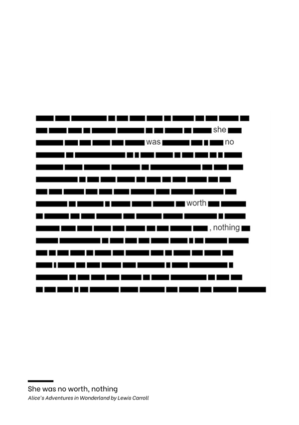
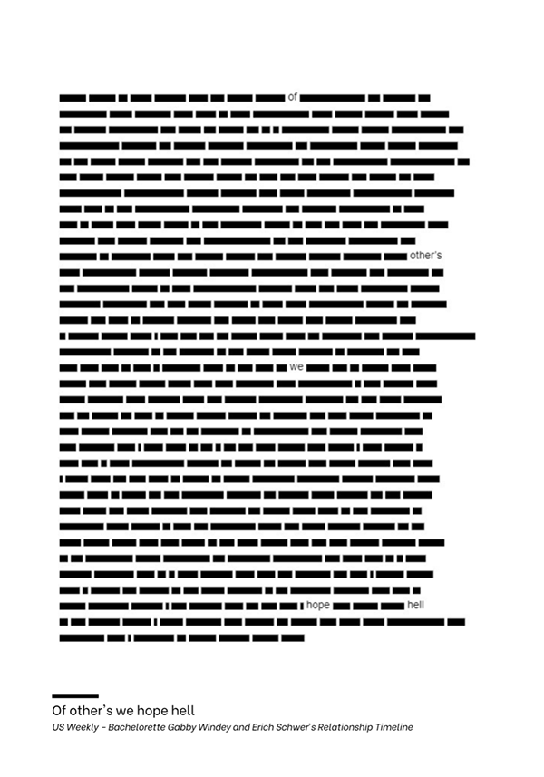

Blackout
This project focuses on developing an algorithm to generate cookie recipes. A unique aspect of this project is that it makes use of the volatile organic compounds (VOCs) in the ingredients, as they are responsible for flavor perception. The metric of overlapping VOCs, allows us to determine the relative affinity of ostensibly dissimilar ingredients. Because there are so many combinations possible we have used computational power, more specifically evolutionary algorithm to narrow down this infinite field of flavor pairing possibilities. This frees up human time which can be better used for tweaking and testing the newly created flavor pairings. Additional operators such as recipe length, texture balance, category variety, and uniqueness of a recipe were used to optimize the recipe.
In other words, in this recipe book, you will find recipes that are generated with an evolutionary algorithm based on the theory of molecular chemistry, to create combinations that do not seem like they would go together but turn out to be spectacular new taste sensations.

